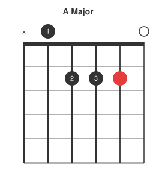
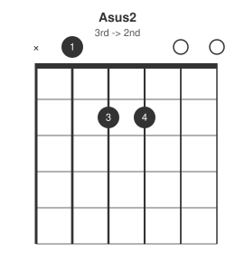
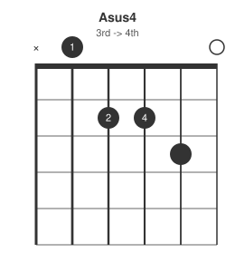
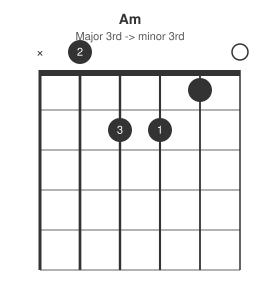
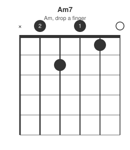
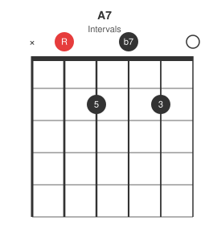
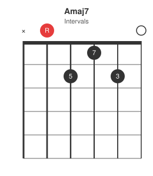
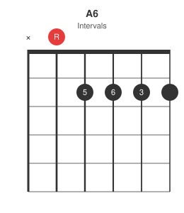
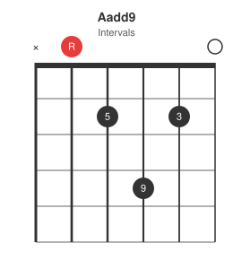

The open A shape is one of the first chords most guitarists learn, and one of the most flexible: nearly every common variation is a single finger moving from the base triad. This post works through those variations one finger-move at a time.
Base shape: A major
A major is the 1-3-5 triad: root, major third, perfect fifth.

Suspended: sus2 and sus4
Suspended chords replace the third with the second or fourth -- no major or minor quality, just tension resolving back to the triad.


From the base A shape: sus2 lifts the middle finger off the third; sus4 shifts it up one fret. Both resolve naturally back to A major.
Minor and minor seventh


Am7 is Am with the note on the D string lifted -- one less finger than the major shape, not more.
Dominant seventh and major seventh


A7 pulls the third's neighbour down to add the flat seventh -- the chord used for the V in a blues in D (see the 12-bar blues post). Amaj7 instead adds a half-step below the octave, a jazzier, unresolved colour.
Sixth and add9


A6 barres the top three strings at the second fret to add the sixth degree without removing anything. Aadd9 stacks a ninth above the third for a bright, open colour without the suspended chord's lack of a third.
Summary table
| Chord | Frets (low to high) | Change from A major |
|---|---|---|
| A | x02220 | base shape |
| Asus2 | x02200 | remove 3rd |
| Asus4 | x02230 | 3rd -> 4th |
| Am | x02210 | major 3rd -> minor 3rd |
| Am7 | x02010 | Am, drop a finger |
| A7 | x02020 | add b7 |
| Amaj7 | x02120 | add maj7 |
| A6 | x02222 | add 6th |
| Aadd9 | x02420 | add 9th |
Next in the series: the same treatment for the D-shape and E-shape open chords.